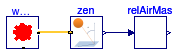
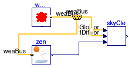

Collection of models that illustrate model use and test models
This package contains examples for the use of models that can be found in Buildings.BoundaryConditions.SolarIrradiation.BaseClasses.
Extends from Modelica.Icons.ExamplesPackage (Icon for packages containing runnable examples).
| Name | Description |
|---|---|
| Test model for brightening coeffcients | |
| DiffuseIsotropic | Test model for diffuse solar irradiation on a tilted surface by using isotropic model |
| Test model for relative air mass | |
| Test model for sky brightness | |
| Test model for sky clearness |
 Buildings.BoundaryConditions.SolarIrradiation.BaseClasses.Examples.BrighteningCoeffcient
Buildings.BoundaryConditions.SolarIrradiation.BaseClasses.Examples.BrighteningCoeffcient
Test model for brightening coeffcients

This example computes the circumsolar and horizon brightening coefficients.
Extends from Modelica.Icons.Example (Icon for runnable examples).
| Type | Name | Description |
|---|---|---|
| Bus | weaBus |
Test model for diffuse solar irradiation on a tilted surface by using isotropic model

This example computes the hemispherical diffuse irradiation on a tilted surface.
Extends from Modelica.Icons.Example (Icon for runnable examples).
| Type | Name | Description |
|---|---|---|
| Bus | weaBus |
 Buildings.BoundaryConditions.SolarIrradiation.BaseClasses.Examples.RelativeAirMass
Buildings.BoundaryConditions.SolarIrradiation.BaseClasses.Examples.RelativeAirMass
Test model for relative air mass

This example computes the relative air mass for sky brightness.
Extends from Modelica.Icons.Example (Icon for runnable examples).
Buildings.BoundaryConditions.SolarIrradiation.BaseClasses.Examples.SkyBrightness
Test model for sky brightness

This example computes the sky brightness.
Extends from Modelica.Icons.Example (Icon for runnable examples).
| Type | Name | Description |
|---|---|---|
| Bus | weaBus | Weather data bus |
Test model for sky clearness

This example computes the sky clearness.
Extends from Modelica.Icons.Example (Icon for runnable examples).
| Type | Name | Description |
|---|---|---|
| Bus | weaBus |